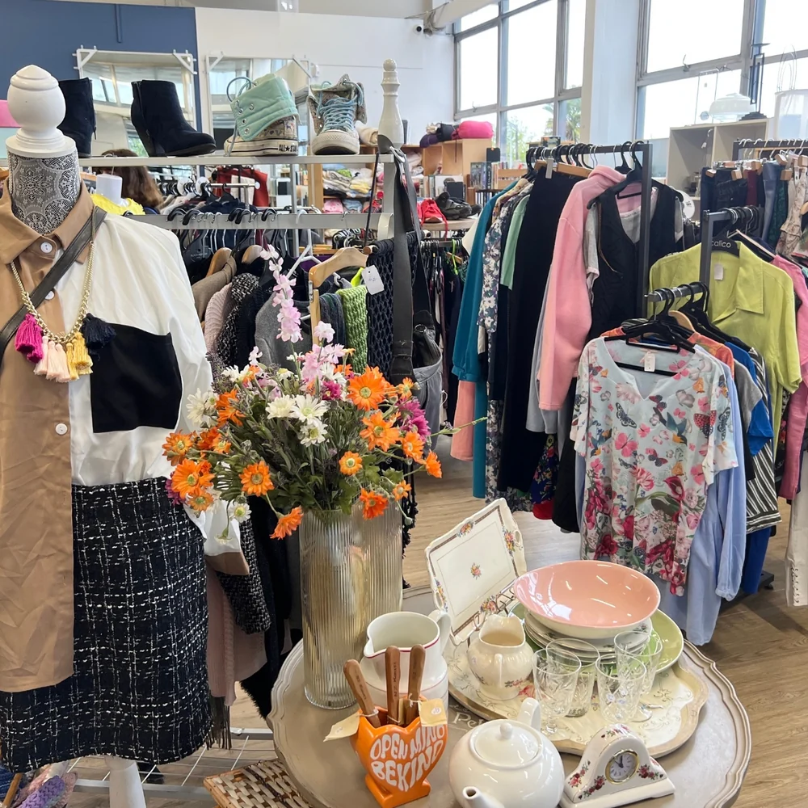
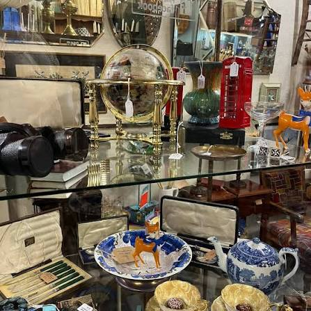
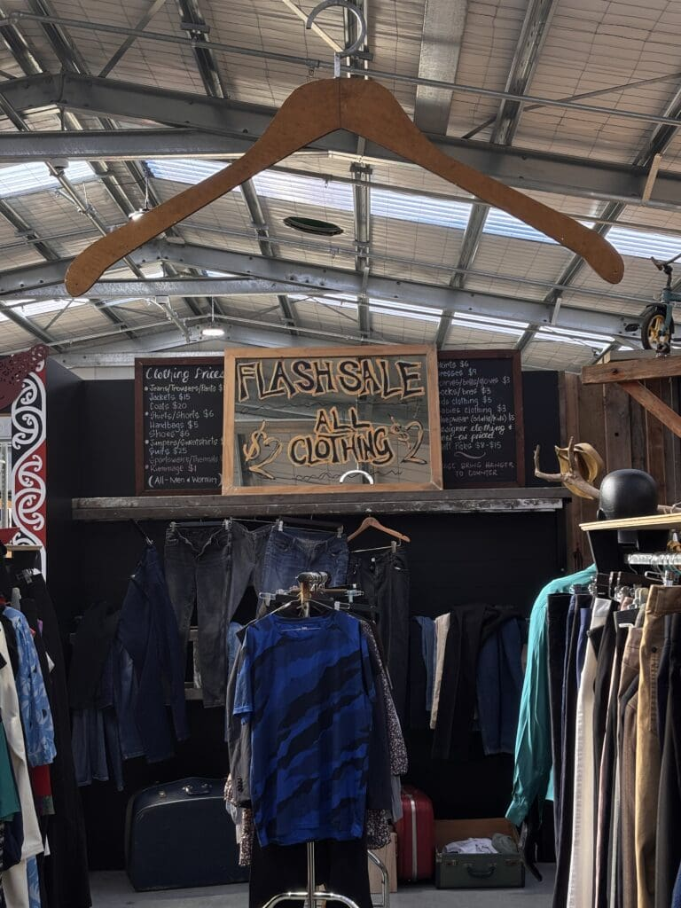
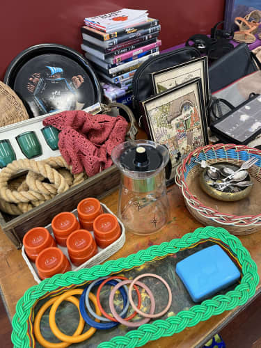

Christchurch has op shops spread across the city. This project brings them together in one easy-to-use interactive map so shoppers can find stores near them and explore different types of second-hand goods.




I kept coming across blog posts about Christchurch's op shops, each one with a screenshot of a map you couldn't actually interact with. I'd find a shop that sounded interesting, then have to go and search for the address myself before I could even work out where it was. After seeing that same pattern over and over, I kept thinking about how much easier it would be if the map was actually usable, so you could search, filter and click straight through to a shop instead of just looking at a picture of one. That's really what this site is: turning that idea into something people can actually use.
Op shopping is a more affordable way to shop, but it's about more than just price. Every pre-loved item you buy is one less thing heading to landfill, and your money goes straight back into local charities and community groups doing real work around the city. It's also one of the best ways to find something genuinely unique: clothing, furniture, books and homewares you won't find on a shelf anywhere else.